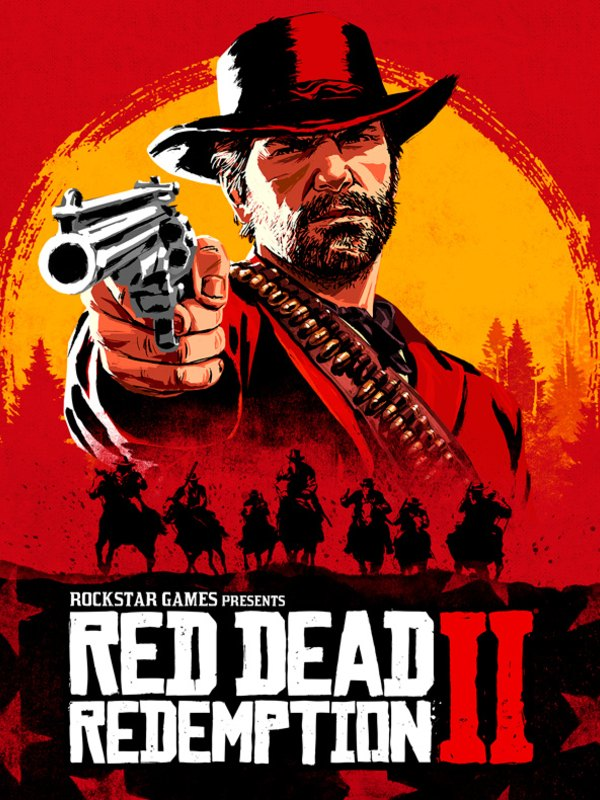

How to enter
Pause, open Settings, then press Triangle or Y for Cheats. Press it again to type the phrase, then switch the cheat on in the list.
Cheats turn off saving, achievements and trophies. Restart the game to go back to normal play.

Pause, open Settings, then press Triangle or Y for Cheats. Press it again to type the phrase, then switch the cheat on in the list.
Cheats turn off saving, achievements and trophies. Restart the game to go back to normal play.
Requirement: Unlocked by a newspaper bought after Chapter 6.
Requirement: Unlocked by a newspaper bought after Chapter 5.
Requirement: Unlocked by a newspaper bought after Chapter 4.
Requirement: Unlocked by a newspaper bought after Chapter 3.
Requirement: Unlocked by a newspaper bought in Valentine during Chapter 1.
Requirement: Unlocked by a newspaper bought after Chapter 3.
Requirement: Unlocked by a newspaper bought after the Epilogue.
Requirement: Unlocked by a newspaper bought after the Epilogue.
Codes last checked against sources on .
Wrong or missing code? Use Report on the cheat, open an issue or send a pull request on GitHub. Each game is one JSON file.